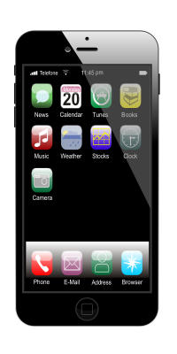

Puhelin
Minulla on iphone 13 pro max, muutaman vuoden vanha puhelin
Vanha puhelin oli OnePlus 6T, rupesin käymään hitaalla niin vaihdoin

Tietokone
Itse kasattu tietokone, osat on ostettu Jimmssiltä.
Vanha tietokone hajosi, enkä jaksanut etsiä vikaa.

Benq 24" 144hz pelinäyttö
Pelaan paljon, joten tämä soveltuu hyvin pelaamiseen pienen vasteajan takia ja suuren hz määrän takia.
Tämäkin ostettu Jimmssiltä.